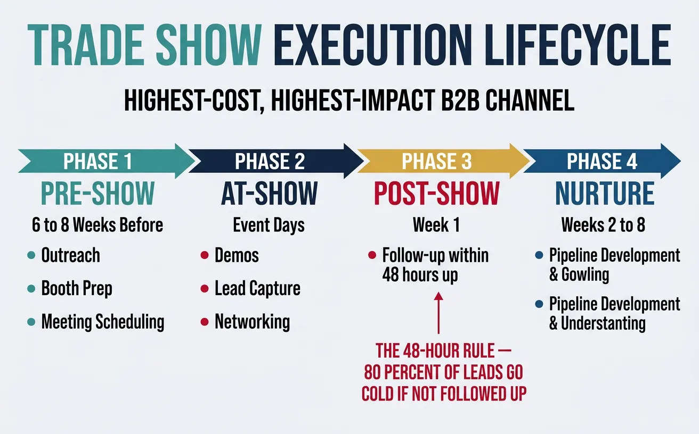
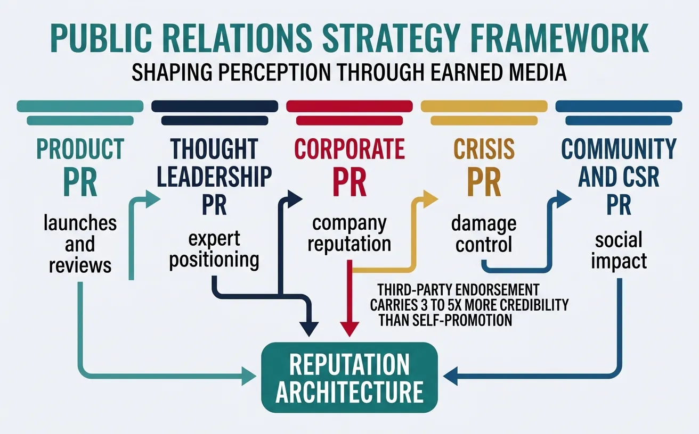
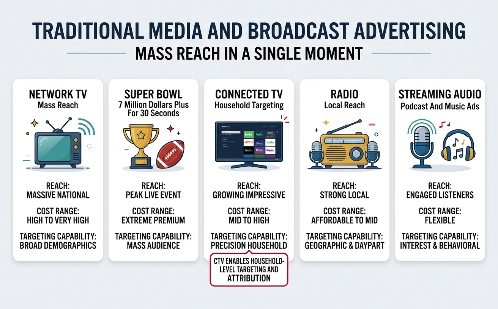
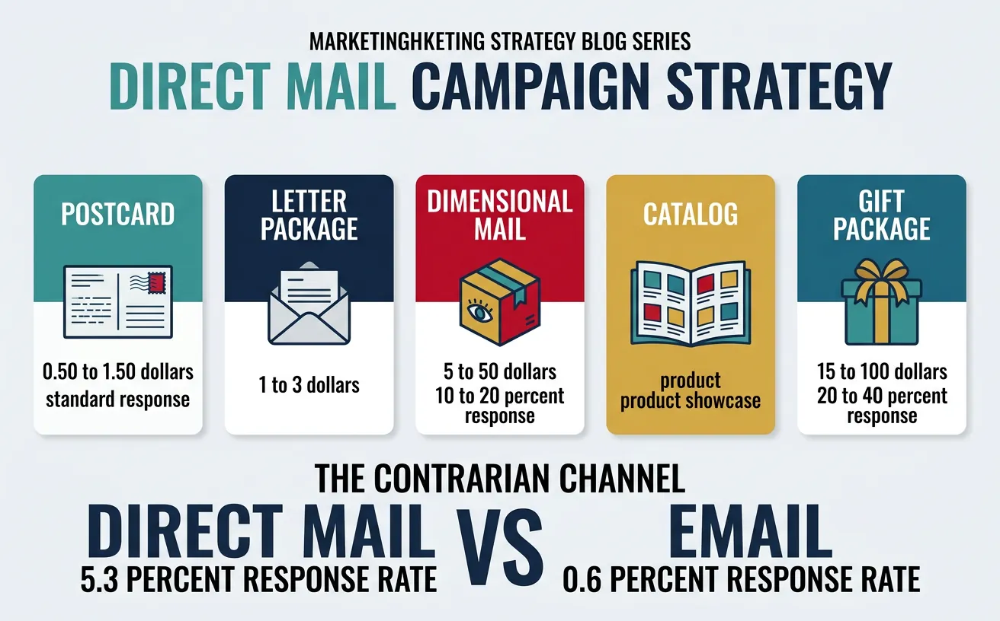

We use cookies to enhance your browsing experience, serve personalized content, and analyze our traffic.
By clicking "Accept All", you consent to our use of cookies. See our
Privacy Policy
for more information.
Part 19 of 21: Building on personal branding from Part 18, this article explores offline channels that complement and amplify digital marketing efforts.
Event marketing is handshake marketing at scale — in a digital world where attention is fragmented and trust is low, face-to-face interactions create bonds that no email sequence or social ad can replicate. Events generate 5-20× higher engagement than digital-only campaigns because they activate all senses simultaneously.
The Event Marketing Paradox: In the age of Zoom, in-person events matter more, not less. Bizzabo reports that 85% of leadership believe in-person events are critical to company success. Post-pandemic, event budgets have recovered to 15-25% of total B2B marketing spend — the largest single line item for many organizations.
Event Type
Scale
Cost Range
Best For
Expected ROI
Owned Conference
500-10,000+ attendees
$200K-$5M+
Brand building, thought leadership, community
3-10× (long-term brand equity)
Executive Dinner
10-30 attendees
$5K-$25K
Enterprise deal acceleration, relationship building
10-50× (pipeline acceleration)
Webinar / Virtual
50-5,000 attendees
$500-$25K
Lead generation, education, global reach
5-15× (lead gen efficiency)
Workshop / Training
15-50 attendees
$2K-$20K
Deep engagement, product adoption, upsell
5-20× (customer retention)
Roadshow
50-200 per stop
$50K-$500K total
Multi-city brand awareness, local market entry
3-8× (market expansion)
Community Meetup
20-100 attendees
$500-$5K
Grassroots community, developer relations
Hard to measure (community value)
Trade Shows & Conferences
Trade shows remain the highest-cost, highest-impact marketing channel for B2B companies. The difference between wasting $100K and generating $2M in pipeline comes down to execution:

Trade show execution lifecycle — from pre-show outreach to post-event pipeline nurture
Demo stations, lead scanning, executive meetings, speaking sessions
200+ qualified badge scans
Post-Show (Week 1)
0-7 days after
Immediate follow-up emails, lead scoring, meeting summaries to sales
100% leads contacted within 48 hrs
Nurture (Weeks 2-8)
1-8 weeks after
Content drip, demo scheduling, sales handoff
15-25% leads → opportunities
The 48-Hour Rule: 80% of trade show leads go cold within 48 hours if not followed up. The single biggest ROI improvement for events isn't a bigger booth — it's a same-day follow-up system. Top performers send personalized recap emails within 4 hours of each conversation.
Experiential Marketing
Experiential marketing creates memorable, shareable moments that earn media coverage and word-of-mouth amplification:
Format
Description
Example
Amplification
Pop-Up Experience
Temporary branded space in high-traffic area
Glossier's "Glossier You" fragrance pop-ups
Social sharing + press coverage
Brand Activation
Interactive installation at existing event
Red Bull's extreme sports activations
Video content + UGC
Immersive Experience
Full sensory brand environment
Meow Wolf's art installations
Viral social media + earned media
Guerrilla Marketing
Unexpected, attention-grabbing stunt
Burger King's "Burn That Ad" AR campaign
PR coverage + social virality
Case Study: Salesforce Dreamforce ($40M+ Owned Event)
Owned ConferenceBrand Building
The Model: Dreamforce is the gold standard for B2B owned events — a 4-day conference that generates $40-50M+ in attributable pipeline annually:
Scale: 170,000+ registered attendees (2023), 1,500+ sessions, San Francisco takeover
Content engine: Every session recorded and repurposed into 12+ months of content (blog posts, videos, case studies)
Community effect: Creates FOMO for non-attendees, strengthens customer loyalty, and recruits evangelists
Multi-year impact: Dreamforce attendees show 3× higher retention rates and 2× higher expansion revenue versus non-attendees
Key Lesson: Owned events create a gravity well for your ecosystem. Salesforce doesn't just run a conference — they've built a cultural moment that defines the enterprise software industry calendar.
Public Relations
PR Strategy
Public relations is reputation architecture — systematically shaping how the world perceives your brand through third-party endorsement, which carries 3-5× more credibility than self-promotion:

Public relations strategy framework — from product PR to crisis communications
Review response, update crisis playbook, train team
Publish findings, demonstrate learnings
The First 4 Hours Rule: In a crisis, the narrative forms in the first 4 hours. If you don't shape it, social media will. Companies that respond within 1 hour see 60% less negative coverage than those that wait 24+ hours. Have a crisis playbook with pre-approved holding statements before you need one.
Case Study: Airbnb's COVID Crisis PR (Saved the Company)
Crisis ManagementStakeholder Communication
The Crisis (March 2020): COVID-19 obliterated Airbnb's business — bookings dropped 72% in 8 weeks, threatening the company's survival pre-IPO:
CEO Letter: Brian Chesky published a transparent open letter to employees and the public — honest about layoffs (1,900 employees), generous severance, and the company's path forward
Host Communication: $250M fund for hosts to cover cancellation costs, direct outreach to 4M+ hosts
Pivot Narrative: Positioned long-term/local stays as the future — "Live Anywhere" campaign launched within months
Transparency: Real-time updates on booking trends, community guidelines, cleaning protocols
Result: Despite the crisis, Airbnb IPO'd in December 2020 at a $100B+ valuation. Chesky's authentic, transparent communication turned a near-death experience into the defining leadership moment that made Airbnb's IPO narrative more compelling.
Traditional Media
Broadcast Advertising
Broadcast advertising is mass reach in a single moment — the only channel that can put your message in front of millions simultaneously, creating shared cultural moments:

Traditional media advertising — broadcast, CTV, and streaming audio channel comparison
Channel
Reach
Cost (30-sec)
Best For
Measurement
Network TV
5-15M viewers
$50K-$500K
Mass awareness, brand building
GRPs, brand lift studies
Super Bowl
115M+ viewers
$7M+ (30 sec)
Cultural moment, brand fame
Social buzz, earned media value
Connected TV (CTV)
Targeted households
$25-$65 CPM
Precision targeting with TV experience
Impression-level attribution
Radio
Market-specific
$200-$5K per spot
Local reach, frequency, commuters
Reach/frequency, lift studies
Streaming Audio
Targeted listeners
$15-$30 CPM
Targeted audio, podcast crossover
Listen-through rate, attribution
The CTV Revolution: Connected TV (streaming platforms like Hulu, Roku, Amazon) combines the impact of TV with the targeting of digital. CTV ad spend is projected to reach $30B+ by 2025. Unlike traditional TV, CTV enables household-level targeting, frequency capping, and attribution — making TV-quality advertising accessible to companies spending $50K+/month (vs. $500K+ for network TV).
Print Media
Print Channel
Audience
Cost Per Ad
Best Use Case
Status (2024+)
Trade Publications
Industry professionals
$2K-$25K
B2B awareness, thought leadership
Still relevant (niche audiences)
Business Magazines
Executives, decision-makers
$50K-$500K
Premium brand positioning
Declining but premium
Newspapers
Local/national readers
$1K-$100K
Local business, political, credibility
Declining rapidly
Direct Mail Inserts
Households, targeted lists
$0.50-$3 per piece
Local retail, services
Steady (surprisingly effective)
Out-of-Home (OOH)
OOH advertising is un-skippable, un-blockable, always-on brand exposure — the one advertising format that can't be clicked away:
OOH Format
Impression Cost
Best For
Innovation
Billboards (Static)
$3-$8 CPM
Highway visibility, local awareness
Vinyl → eco-friendly materials
Digital Billboards (DOOH)
$8-$20 CPM
Dynamic messaging, dayparting, real-time content
Programmatic buying, weather triggers
Transit Ads
$2-$6 CPM
Commuter audiences, city coverage
Full vehicle wraps → moving billboards
Street Furniture
$5-$12 CPM
Urban foot traffic, pedestrian-level
Interactive screens, QR codes
Place-Based
$10-$30 CPM
Gyms, airports, malls — captive audiences
Screen networks, contextual targeting
Case Study: Spotify Wrapped Billboard Campaign ($0 Media Cost, Billions of Impressions)
OOH + DigitalCultural Moment
The Concept (2016-Present): Spotify's annual "Wrapped" campaign combines OOH billboards with digital personalization to create one of marketing's most anticipated cultural moments:
OOH component: City-specific billboards using anonymized listener data ("Dear person who played 'Sorry' 42 times on Valentine's Day, what did you do?")
Digital amplification: Personalized Wrapped cards shared by 100M+ users across Instagram, Twitter, and TikTok — creating billions of organic impressions
Multi-channel integration: Billboard creative drives social conversation; social sharing drives billboard awareness — a perfect amplification loop
Impact: Wrapped generates more social media mentions than any brand campaign each year, with $0 paid social media spend
Key Lesson: The best offline marketing creates content designed to be shared digitally. Spotify's billboards aren't just ads — they're conversation starters that generate 100× their cost in earned media.
Direct Marketing
Direct Mail Strategy
Direct mail is the contrarian channel — while everyone fights for inbox attention, physical mail gets a 5.3% response rate vs. email's 0.6% (DMA). As digital channels become more saturated, direct mail's effectiveness has actually increased:

Direct mail strategy — response rates outperform email at 5.3% versus 0.6%
Direct Mail Type
Cost Per Piece
Response Rate
Best Use Case
Key Success Factor
Postcard
$0.50-$1.50
3-5%
Quick offers, event invites
Bold design, single CTA
Letter Package
$1.00-$3.00
4-6%
B2B prospecting, detailed offers
Personalized, story-driven copy
Dimensional Mail
$5-$50+
10-20%
ABM campaigns, executive outreach
Memorable object that ties to message
Catalog
$0.75-$3.00
2-4%
E-commerce, product discovery
Curated selection, lifestyle imagery
Gift/Package
$15-$100+
20-40%
Key account engagement, renewals
Thoughtful, relevant to recipient
Dimensional Mail in B2B: Sending a $25 "dimensional mailer" (a package with a relevant physical item + personalized note) to 100 target executives generates more pipeline than $10K of LinkedIn ads reaching 10,000 people. The math: 100 packages × $25 = $2,500, with 20%+ response rate = 20 conversations. That's $125/qualified conversation vs. $500+ on digital for enterprise accounts.
Catalog Marketing
Despite predictions of its death, catalog marketing has been reborn as a digital-physical hybrid. Catalogs now work as browsing triggers — recipients shop the catalog physically, then purchase online:
Metric
Traditional Catalog
Modern Catalog
Purpose
Order form (shop from catalog)
Discovery tool (browse catalog, buy online)
Page Count
100-300 pages
24-48 pages (curated)
Tracking
Response codes, phone orders
QR codes, unique URLs, matchback analysis
ROI Measurement
Direct response revenue
Incremental lift in online orders from catalog recipients
Omnichannel Integration
The real power of offline marketing unlocks when it's integrated with digital — not replacing it, but amplifying it:
Offline Channel
Digital Integration
Measurement Bridge
Lift Impact
Event
Event app, live social wall, post-event nurture emails
Badge scan → CRM → pipeline attribution
30-50% higher conversion vs. digital-only
Direct Mail
QR codes to landing pages, personalized URLs (PURLs)
Matchback analysis, promo code tracking
40% lift in response when combined with email
OOH/Billboard
Geofenced mobile retargeting, search lift measurement
Geo-lift studies, brand search volume increase
25% increase in local search volume
TV/Radio
Second-screen engagement, vanity URLs/hashtags
Search uplift, website traffic spikes during airtime
15-30% search volume increase during campaign
PR/Earned Media
SEO value of backlinks, social amplification of coverage
Case Study: Warby Parker's Offline-Digital Flywheel ($6.8B at Peak Valuation)
OmnichannelDTC Retail
The Strategy: Warby Parker built a DTC eyewear brand that proves offline and digital channels amplify each other:
Home Try-On program: Physical product experience → online purchase conversion rate of 50%+ (vs. 3% typical e-commerce)
Retail stores: 220+ stores act as billboards, fitting rooms, and brand experience centers — customers who visit stores have 2× higher LTV
Word-of-mouth engine: Unique blue case → "Where'd you get those glasses?" conversations → referral loop
PR foundation: "Buy a Pair, Give a Pair" social mission generates $100M+ in equivalent earned media value over the brand's lifetime
Data integration: In-store try-on data feeds personalized online recommendations; online browsing data informs store inventory
Key Lesson: The strongest brands don't choose between online and offline — they build flywheels where each channel makes the others stronger. Warby Parker's stores aren't a cost center; they're the highest-ROI marketing investment the company makes.
Tools & Practice
Offline Marketing Canvas
Plan your offline marketing strategy. Download as Word, Excel, PDF, or PowerPoint.
Draft auto-saved
All data stays in your browser. Nothing is sent to or stored on any server.
Practice Exercises
Exercise 1: Design Your Event Strategy
Create an event marketing plan for a B2B SaaS company:
Identify the 3 most important trade shows/conferences in your industry
Design a pre-show outreach plan to schedule 30+ meetings before attending
Create a booth action plan (demo stations, messaging, lead capture process)